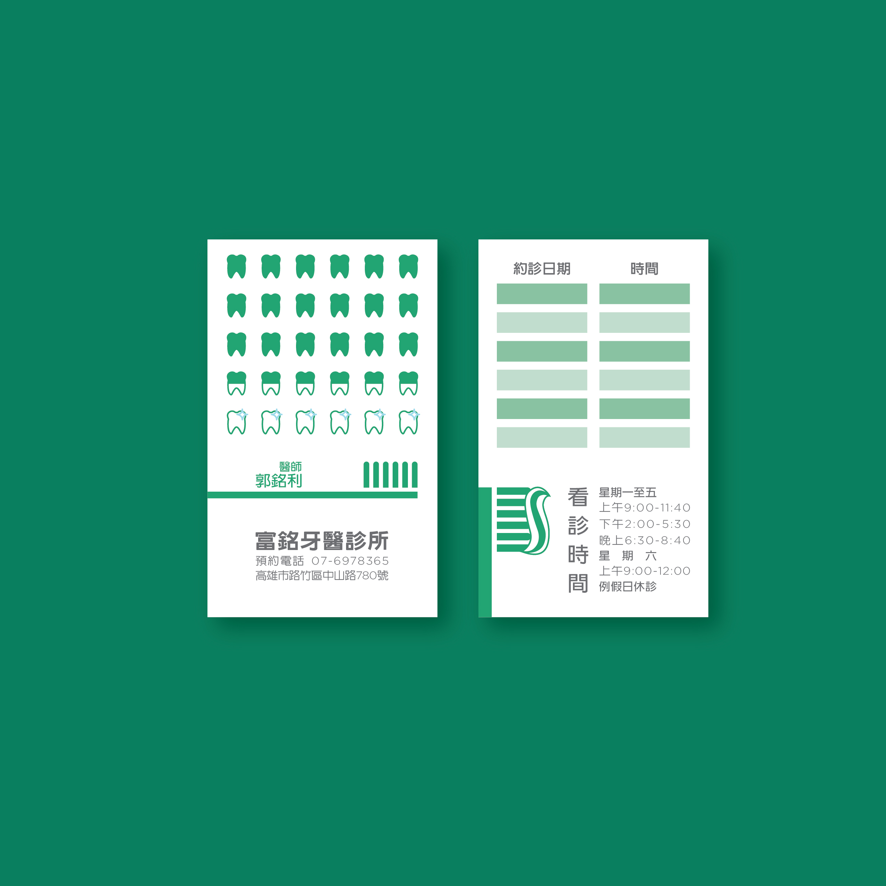
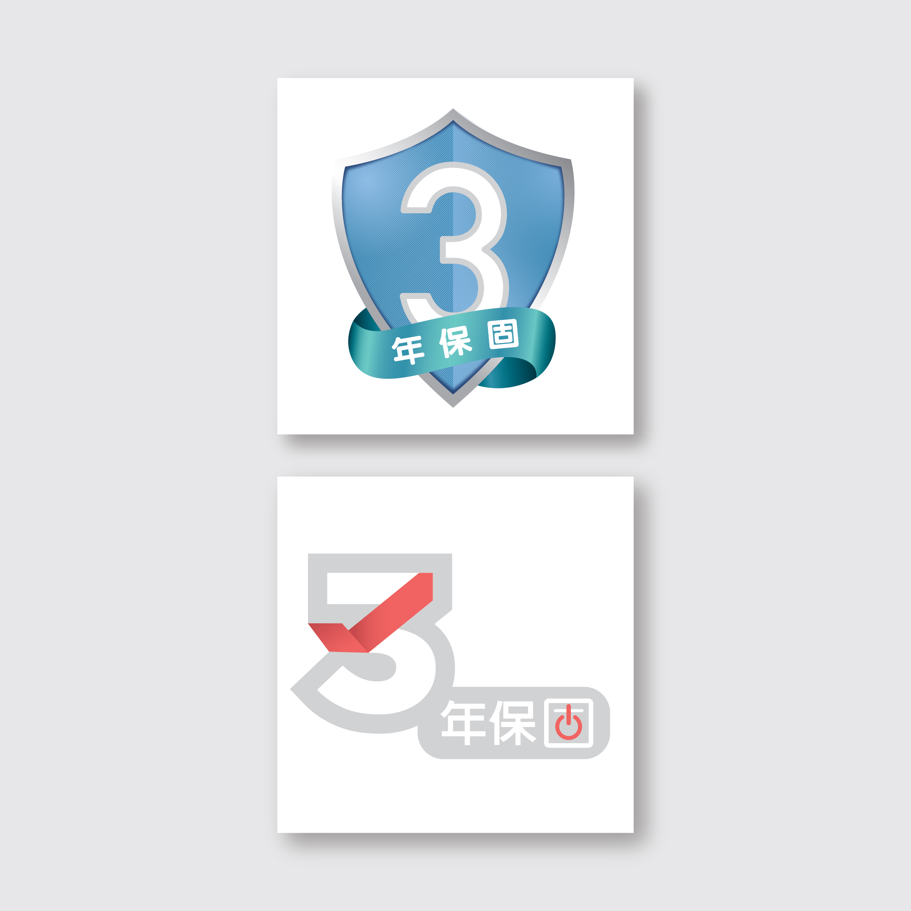

While vacationing in Taiwan during the summer of 2018, I was fortunate enough to find and intern at USON Card King, a small graphic design firm located in Taichung. While they mostly specialize in designing business cards for clients, I also had the opportunity to design fliers, stamps, stickers, and web banners for clientele.
The turnaround time for each project I received was about a day. For everything I designed, I was required to make at least two versions for the client to choose from — one version might include serif font, and the other sans-serif to give clients a sense of how certain typography might affect their branding. Once I had completed two initial drafts, I would send them over to my manager, who would review them and give me feedback to iterate on. After finishing my second draft, I would send the designs to clients for approval.
Fun fact: I once asked my mom what my proficiency in Mandarin was and she labeled it as, “About the same level as a Taiwanese kindergartener.” Understandably, as a graphic design firm in Taiwan, the main languages spoken there were Mandarin Chinese and the Taiwanese dialect. So with Mandarin being my second language, I struggled for a while to quickly adjust to both the language barrier and the overall cultural difference. But because of these hardships, I completed my internship with not just a better understanding of design thinking and graphic design, but also an improved conversational fluency in Mandarin Chinese.